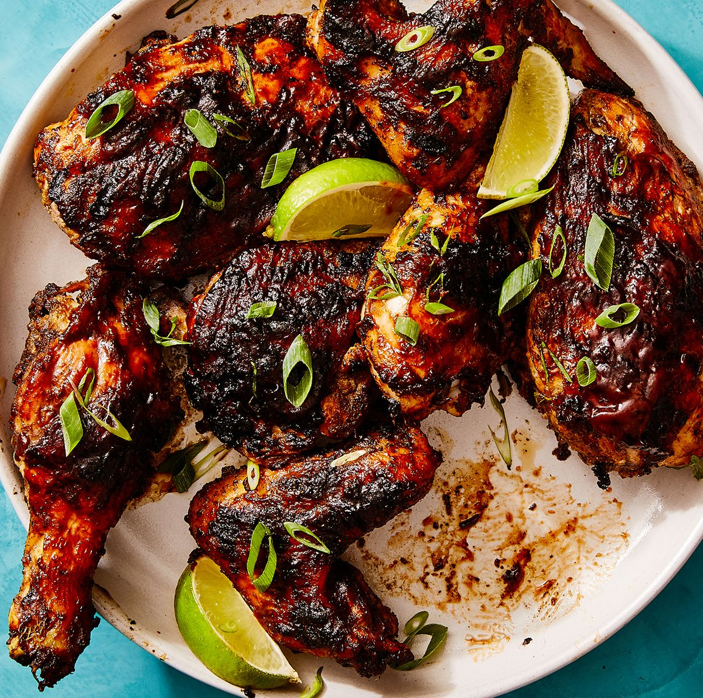

Jerk Chicken

Description
For all the depth of flavor this dish provides,
Jamaican jerk chicken is fairly simple to prepare.
Once you've gathered all your ingredients, everything but the chicken gets whizzed in the food processor to make a marinade. It's important to let the chicken marinate overnight, so the seasoning has time to thoroughly penetrate the meat. Then, all that's left to do is bring the chicken up to room temperature and grill it until well-browned.
The chicken can also be roasted in the oven if desired.
Indgredients
- 1 medium onion, coarsely chopped
- 3 medium scallions, chopped
- 2 Scotch bonnet chiles, chopped
- 2 garlic cloves, chopped
- 1 tablespoon five-spice powder
- 1 tablespoon allspice berries, coarsely ground
- 1 tablespoon coarsely ground black pepper
- 1 teaspoon dried thyme, crumbled
- 1 teaspoon freshly grated nutmeg
- 1 teaspoon kosher salt
- 1/2 cup soy sauce
- 1 tablespoon vegetable oil
- 2 (3 1/2 to 4-pound) chickens, quartered
- In a food processor, combine the onion, scallions, chiles, garlic, five-spice powder, allspice, pepper, thyme, nutmeg, and salt; process to a coarse paste. With the machine on, add the soy sauce and oil in a steady stream. Pour the marinade into a large, shallow dish, add the chicken, and turn to coat. Cover and refrigerate overnight. Bring the chicken to room temperature before proceeding.
- Light a grill. Grill the chicken over a medium-hot fire, turning occasionally, until well browned and cooked through, 35 to 40 minutes. (Cover the grill for a smokier flavor.) Transfer the chicken to a platter and serve.